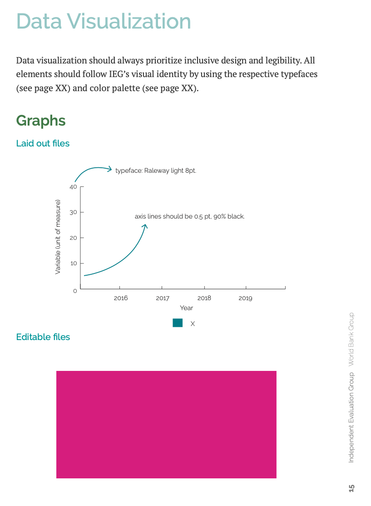

The Independent Evaluation Group, World Bank Group
An interactive graph for The World Bank Performance Results and Performance of 2020 report viewable on their online Reader.
End-to-end design and development.
The user has access to an overview of the chapter's data using up minimal screen space by merging four separate graphs measuring the same outcome rather than displaying them one after another.
The Director General's office wrote a significant report available in print and The World Bank's online Reader. It assessed the World Bank's performance, departing from tradition, and instead, analyzing results beyond ratings to classify outcome levels for World Bank and International Finance Corporation (IFC) projects.
The World Bank had recently begun incorporating interactivity into their online reports. This report was an opportunity to showcase the Director General's office partaking in the adoption and integration of technological advancements and improvements within the company.
Even though The World Bank approached me to create four static graphs for the online report, they were not thrilled at the prospect of multiple graphs taking up a lot of screen space, especially on mobile. However, they were not sure of an alternative.
As I listened to their ideas and potential pain points, an opportunity to create a better experience for the user became clear.
These particular graphs are outcome ratings of The World Bank. They are all measured in percent over units of years. I suggested combining them into an interactive graph, allowing the user to compare the data and minimize screen space.
The original report graphs are in a standard format with a title, caption, and x/y axis labels.
Four original graphs from the print report
Before combining the graphs, I re-evaluated every part deciding between necessary and redundant elements and how to display and associate information. My design plan was as follows:
The World Bank's branding and style document dictated the UI basics. Fortuitously, there are precisely five secondary colors–the graph has five lines!
The World Bank Group's color palette
The World Bank Group's data vizualization style guide
I styled the Country Program Outcome graphs of FCV and non-FCV rated countries with red and orange as they had to be displayed simultaneously, and they are analogous colors.
Using analogous colors for association
Looking to associate the graph line and legend label with the caption, I added the data color to a left border alongside the caption to not break the reading line while the eye traveled downwards.
Left-border next to the caption guiding the eye down the page
I used Chart.js API to develop the graph. Once I set up a basic graph, I made the caption text appear when selecting the corresponding legend item. Making the text the color the same as the associated graph line decreased my QA time, as it became effortless checking if the right caption appeared with the correctly corresponding graph line.
Captions colored to match the graph line decreasing QA time
Once I had a working prototype, I shared it with the stakeholders to see if the interactivity of the graph successfully achieved their goals.
Upon seeing the interactivity at play, they realized the x-axis label felt redundant on the graphs with standard years but necessary on the fiscal year graph. They also worried the trend differences were not apparent enough. I solved these concerns by increasing the minimum and decreasing the maximum y-axis scale to exaggerate the change of the trends and removing the x-axis label on the graphs with standard years.
Since they did not want a direct comparison of the graphs to be the main focus, they floated the idea of a blank graph upon load. I explained the possibility of a user missing the graph information altogether with an initial blank load. They agreed all lines should be visible upon load, but captions would only be visible upon selection of the legend items.
To facilitate UX user instructions would be included in the graph title.
During the styling process, the location of the legend continued to bother me. Although a legend is usually under or to the side of a graph, since the legend labels were serving as the graph titles, I felt the top of the graph would be a better placement. The change in legend position removed the visual break that previously occurred between the graph and the caption.
Legend moved to the tope of the graph
The stakeholders were still concerned the trends were being lost on a desktop screen as the graph stretched out. I resolved this by not maintaining the aspect ratio and creating different ratios as the screen size changed. I also applied a maximum width preventing the graph from expanding past the point of usefulness.
Aspect ratios left to right for widest to narrowest
To increase accessibility to the caption, especially on mobile, I made it more prominent.
Caption bolded and increased in font size
As I tweaked and tested the styles, I felt the legend was hard to read due to the low line-height and center alignment. Left-aligning and adding padding resolved the readability problem, making it easier to read the legend labels one at a time.
The interactive graph placed at the head of the chapter gave the user an overview and comparison of the chapter data without having to scroll through multiple graphs, decreasing the likelihood of accurate comparison.
Finished interactive graph